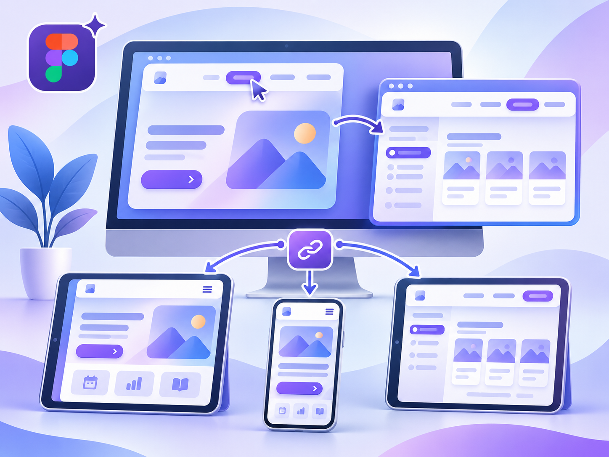
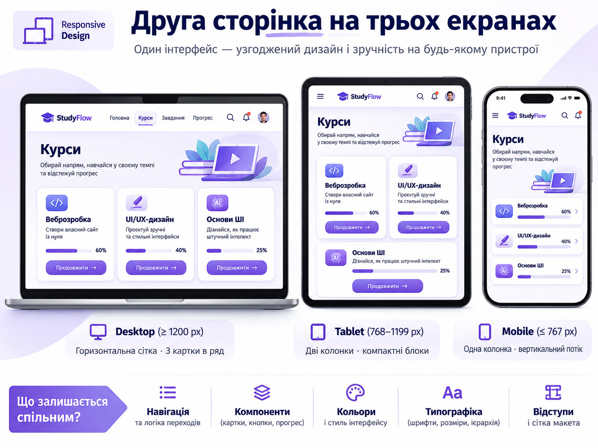
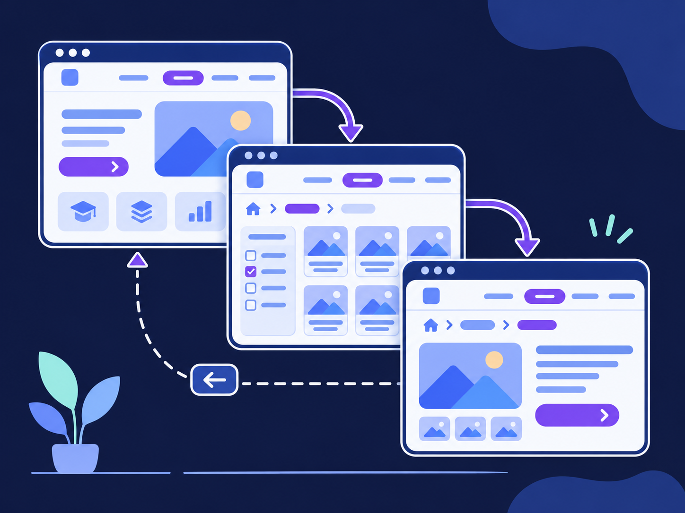
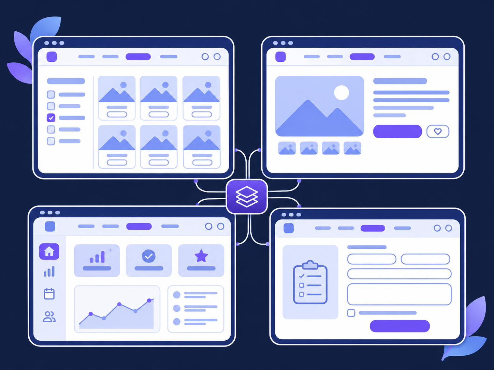
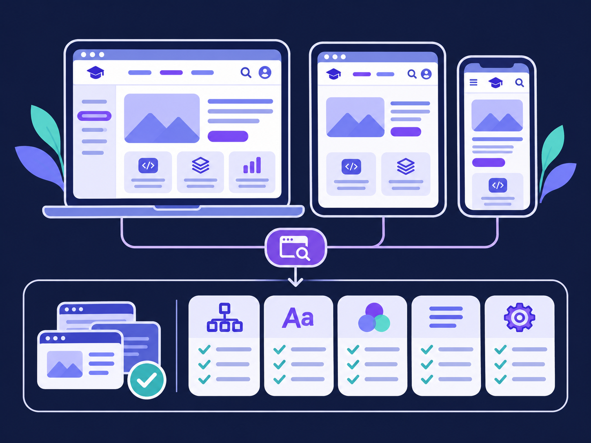
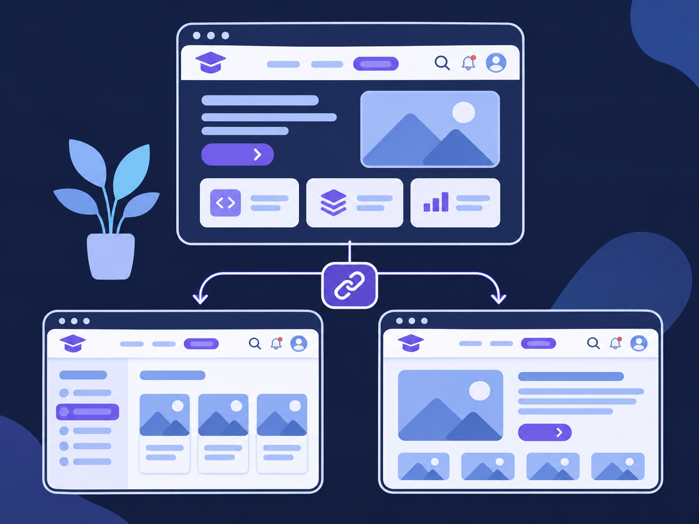

Визнач завдання сторінки
Подумай, навіщо користувач відкриває цю сторінку та яку одну головну дію він має виконати.
Результат: одне чітке речення про призначення сторінки.
10 КЛАС · 90 ХВ · ПРОДОВЖЕННЯ ПРОЄКТУ
Розроби внутрішню сторінку власного продукту: збережи спорідненість із головною, продумай навігацію та адаптуй Desktop, Tablet і Mobile. Прототипування — у Парі 05.

ЛИШЕ ДЛЯ ВЧИТЕЛЯ
90 хв: аудит 10, теорія 15, Desktop внутрішньої сторінки 20, Tablet/Mobile 25, ШІ-аудит 15, підсумок 5. Не повторюємо створення дизайн-системи, кнопок, Sitemap чи головної сторінки. За наявності готового Desktop-макета учень його вдосконалює. Мінімум: одна внутрішня сторінка на трьох розмірах, споріднена з головною, із продуманою навігацією. Прототипування — Пара 05.
10 ХВ · НАВЧАЛЬНА ЛАБОРАТОРІЯ
Продовжуй власний проєкт: імпортуй JSON Пари 03, відкрий готові макети та обери внутрішню сторінку. Якщо її Desktop-версію створено раніше, не починай заново .
15 ХВ · НАВЧАЛЬНА ЛАБОРАТОРІЯ
Це нові принципи проєктування внутрішніх сторінок , а не повторення інструментів Figma. Розкривай підрозділи послідовно.
У межах одного продукту користувач має впізнавати навігацію, типографічну ієрархію, стилі кнопок і карток. Але сторінка деталей, каталог та профіль не повинні мати однакову структуру: кожна розв'язує інше завдання.
Приклад: на головній — огляд курсів, на внутрішній — деталі одного курсу. Логотип, меню й стилі спільні, але вміст та його ієрархія відрізняються.

Навігація внутрішньої сторінки має відповідати на три запитання: де я перебуваю? (активний пункт меню або заголовок); як сюди потрапив? (зрозумілий контекст); як повернутися? (меню, посилання або доречні «хлібні крихти»).
Помилка: на сторінці деталей немає назви розділу, а кнопка «Назад» веде в невідоме місце. Краще: «Курси / Веброзробка» і зрозумілий шлях до каталогу. Хлібні крихти потрібні не для кожного простого сайту.

Каталог: пошук, фільтри, перелік і картки. Деталі: назва, важлива інформація, основна дія, допоміжні відомості. Профіль: особисті дані, налаштування, статуси. Не копіюй головну сторінку: визнач пріоритет інформації для конкретної задачі.
Постав собі питання: яку одну дію користувач має виконати на цій сторінці? Чи видно її без довгого пошуку?

Використовуй уже знайомі Auto Layout, Resizing і Constraints. Нове завдання — змінити пріоритети вмісту : фільтри можуть згортатися, картки — ставати вертикальними, допоміжна колонка — переміщуватися нижче, а основна дія — залишатися помітною.
768 і 390 px — навчальні ширини фреймів, а не універсальні межі для всіх продуктів. Додатково перевір 320 px.

Порівняй головну та внутрішню сторінки: чи збігаються навігація, правила назв, візуальна мова та очікування користувача? Чи зрозуміло, який елемент у майбутньому відкриватиме іншу сторінку? У цій парі плануємо переходи, а не налаштовуємо Prototype.

20 ХВ · НАВЧАЛЬНА ЛАБОРАТОРІЯ
Відкрий раніше створений Desktop-макет внутрішньої сторінки або побудуй його з готових компонентів. Не створюй повторно палітру, кнопки чи дизайн-систему.
Твоя місія: підготувати Desktop-макет внутрішньої сторінки, яку користувач зможе впізнати як частину твого продукту.
Подумай, навіщо користувач відкриває цю сторінку та яку одну головну дію він має виконати.
Результат: одне чітке речення про призначення сторінки.
Розташуй заголовок, основний вміст, головну дію та допоміжні блоки за важливістю.
Результат: потрібну інформацію легко знайти з першого погляду.
Використай наявну навігацію, типографіку, компоненти й кольорові ролі з головної сторінки.
Результат: обидві сторінки виглядають як частини одного продукту.
Познач активний розділ меню та зрозумілий спосіб повернутися до попереднього розділу.
Результат: користувач розуміє, де перебуває і куди повернутися.
Визнач елемент, через який користувач згодом перейде на цю сторінку.
Результат: є зрозумілий задум майбутнього переходу.
Заповнюй поля після виконання відповідних кроків. Відповіді зберігаються автоматично.
Готово, якщо Desktop-фрейм має головну дію, спільний стиль і зрозумілу навігацію. Познач три пункти самоперевірки та переходь до адаптації.
Далі: адаптація Tablet і Mobile →25 ХВ · НАВЧАЛЬНА ЛАБОРАТОРІЯ
Адаптуй саме внутрішню сторінку , зважаючи на її специфічні блоки. Це застосування попередніх знань до нової задачі, а не повторне створення головної.
Твоя місія: адаптувати саме цю внутрішню сторінку для планшета й телефона, не втративши її головної дії та зв’язку з головною сторінкою.
Створи або вдоскональ планшетний фрейм. Перевір ширину контенту, навігацію та другорядні блоки.
Результат: читабельний Tablet-макет без випадкового обрізання.
Визнач, що має бути на першому екрані. Перебудуй складні блоки та залиш головну дію доступною.
Результат: зрозумілий Mobile-макет із пріоритетним вмістом.
Перевір вузький екран: перенесення тексту, горизонтальне переповнення, порядок блоків та доступність дій.
Результат: записано, що працює та що потребує виправлення.
Порівняй навігацію, заголовки, кнопки та відступи внутрішньої й головної сторінок на кожному пристрої.
Результат: сторінки споріднені, але не копіюють одна одну.
Заповнюй поля після виконання відповідних кроків. Відповіді зберігаються автоматично.
Готово, якщо є Tablet- і Mobile-фрейми, головна дія помітна, а перевірка 320 px зафіксована. Познач три пункти самоперевірки.
Далі: ШІ-аудит →15 ХВ · НАВЧАЛЬНА ЛАБОРАТОРІЯ
Передай ШІ скриншоти без персональних даних. Рекомендації перевіряй самостійно у Figma. На цьому занятті не тестуємо клікабельний прототип .
Порівняй головну та внутрішню сторінки одного цифрового продукту на скриншотах. Вкажи до п’яти конкретних ознак візуальної спорідненості або неузгодженості: навігація, типографіка, компоненти, відступи, назви розділів. Для кожної проблеми наведи видимий доказ. Не пропонуй заново створювати дизайн-систему.
Оціни три версії внутрішньої сторінки: Desktop, Tablet, Mobile. Чи збережено пріоритет головної дії, чи зрозуміло, де перебуває користувач і як повернутися? Знайди до трьох конкретних ризиків. Відокрем спостереження від припущень; не стверджуй, що переходи працюють, адже це ще статичні макети.
5 ХВ · НАВЧАЛЬНА ЛАБОРАТОРІЯ
Зафіксуй власні рішення та їхні підстави. Якість роботи перевіряється за Figma-макетами, не лише за чеклістом.
Самооцінка: /12
ЕКСПОРТ ТА ВІДНОВЛЕННЯ
TXT — звіт для Moodle; JSON — повний стан Пари 04. Зберігай оригінальний JSON Пари 03 окремо.
LocalStorage зберігає дані лише в цьому браузері на цьому пристрої. Для переходу між пристроями експортуй JSON.